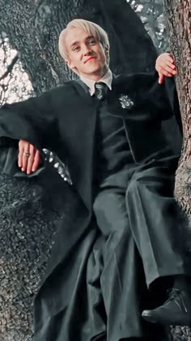

Драко вошёл в магический мир с уверенностью, что фамилия — это форма заклинания. Он разговаривает так, будто за каждым словом стоит Министерство, родовое древо и юрист. На практике за словами обычно стоит только он сам, мантия и лёгкая паника. Драко искренне верит, что статус должен работать автоматически, желательно без личного участия.
Внутри вселенной он выполняет функцию декоративной угрозы. Он грозится, жалуется, строит планы и тут же пугается их последствий. Его абсурдность в том, что он хочет быть зловещим, но не хочет отвечать за зловещесть, поэтому большую часть времени напоминает хорька, который шипит на льва, будучи уверенным, что его кто-нибудь сейчас заберёт с арены.